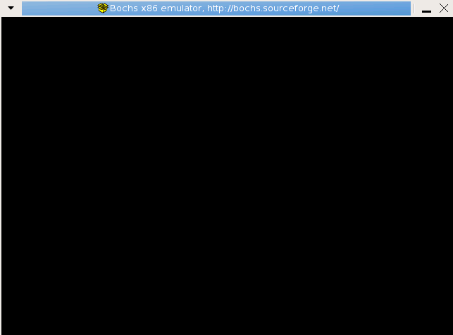
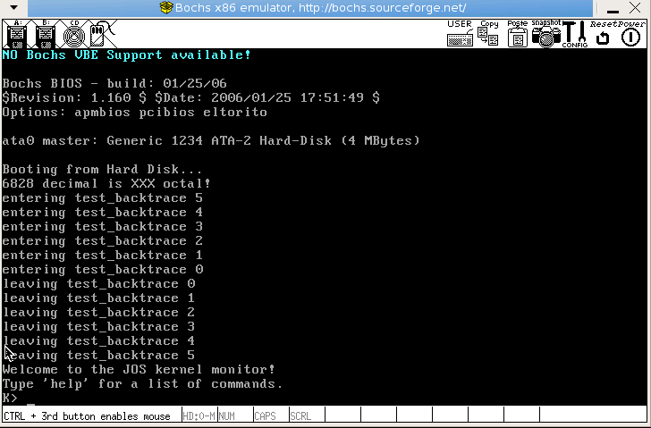

作者: Ji You Email: jumail@qq.com
Ceph的框架
本文翻译自版本。
介绍
分为三部分。
- Ceph存储集群
- 存储数据
- 扩展性与高可用
- 动态的集群管理
- 纠删码
- 缓存分层
- 扩展Ceph
- 总结
- Ceph协议
- 本地协议与librados
- Object观测与通知
- 数据分块
- Ceph客户端
- 对象存储
- 块存储
- 文件系统
简介
Ceph将对象存储、块存储、文件存储统一到一个存储系统中。 Ceph的目标是实现一个高可靠、易管理、免费的存储系统。 借助于Ceph的力量，可以轻易地转变公司IT部门的结构，还可以管理海量数据。 除此之外，Ceph还拥有超强的扩展能力，能够支持成千上万的客户端。 Ceph的数据容量已持续爆炸性增长到拍字节（Petabytes）和艾字节(Exabytes）。
首先你需要下载本次实验的代码。在开始实验之前。还需要一系列的准备工作，步骤如下。
第一步 下载资源
找一台Linux机器，推荐CentOS 5.6版本。安装好git与c,c++之后。执行命令如下：
cd /opt/
git clone https://github.com/JiYou/ceph-docs.git
cd ceph-docs
git checkout master
注意 寻找到CentOS 5.6的DVD光盘，在安装操作系统时，请选择Development Libraries和Development Tools。请务必使用CentOS 5.6版本，更新的发行版由于编译器更新，编译时，容易出现各种未知错误。安装时，务必将桌面系统也安装上。
第二步 安装Bochs
安装Bochs顺序如下：
cd ceph-docs # 此处为前面下载资源目录。
mkdir -p ~/ceph
cp -rf Course1/bochs-2.2.6.tar.gz ~/ceph/
cd ~/ceph/
./configure --prefix=/usr \
--enable-cdrom \
--enable-disasm \
--enable-smp \
--enable-debugger \
--enable-new-pit \
--enable-all-optimizations \
--enable-4meg-pages \
--enable-global-pages \
--enable-pae \
--disable-reset-on-triple-fault \
--with-all-libs \
--with-x \
--with-x11 \
--with-nogui
如果看到如下输出，则说明configure成功：
config.status: creating build/linux/bochs-dlx
config.status: creating bxversion.h
config.status: creating build/macosx/Info.plist
config.status: creating build/win32/nsis/Makefile
config.status: creating build/win32/nsis/bochs.nsi
config.status: creating host/linux/pcidev/Makefile
config.status: creating config.h
config.status: creating ltdlconf.h
紧接着开始编译且安装源码包：
make
make install
各参数解释如下:
- --enable-cdrom: 支持CDROM
- --enable-disasm: 使得Bochs可以反汇编机器指令，disasm是disassemble的缩写。
- --enable-smp: 支持SMP配置。
- --enable-debugger: 使得用户可以使用bochs自带的调试器进行调试。
- --enable-new-pit: 使用新的更加完善的pit模块。
- --enable-all-optimizations： 打开所有的速度优化选项。
- --enable-4meg-pages: 支持4M页面扩展。
- --enable-global-pages: 支持全局页面特性。避免经常使用的页面从TLB中移出。
- --enable-pae: 支持特理地址扩展。
- --disable-reset-on-triple-fault: 关闭三次错误之后自动重启。
- --with-all-libs: 使用所有的库。
- --with-x: 使用Xwindows.
- --with-x11: 使用x11桌面系统。
- --with-nogui: 不使用幼稚的GUI。
注意
- 此处必须使用bochs-2.2.6.tar.gz，最好不要使用其他版本bochs。否则容易出现未知问题。
- C/C++是必须的在configure之前安装好的。
- 原MIT课程使用了Athena系统来提供学生的上机服务。此处用用自己的Linux实验过程来进行补充。所以看英文原版的就不用去想Athena是什么系统了。
- 使用越新的系统，由于gcc/g++版本越高，在编译旧版本的bochs时，容易遇到编译器的问题。因此，推荐使用CentOS-5.6系统。
第三步 启动Lab1
安装好Bochs之后，便可以开始Lab1实验了。编译步骤如下：
cd ~/ceph
cp -rf /opt/ceph-docs/Course1/lab1.tar.gz ./
tar zxf lab1.tar.gz
cd lab1
make
接下来需要在GUI环境中，打开命令行:
cd ~/ceph/lab1
bochs
得到如下输出：
You can also start bochs with the -q option to skip these menus.
1. Restore factory default configuration
2. Read options from...
3. Edit options
4. Save options to...
5. Begin simulation
6. Quit now
Please choose one: [5]
输入5
选择选项5，开始仿真。出现如下界面：
 图1.1 运行bochs
此时bochs并没有任何输出。需要选中终端，终端中有如下内容：
Next at t=0
(0) [0xfffffff0] f000:fff0 (unk. ctxt): ljmp f000:e05b ; ea5be000f0
<bochs:1>
输入c，表示继续执行，得到如下界面：
 图1.2 内核初始运行画面。
如果能得到类似输出，表明Lab1执行成功。
Part 1： 启动PC
第一个练习的目的在于让你熟悉x86汇编语言以及PC的开机启动过程，此外，也需要让你熟悉Bochs debugger。在本节实验中，你不需要写任何代码，但是你需要理解下面的知识，以确保能够正确地回答练习中的问题。
开始学习x86汇编
如果你并不熟悉汇编语言，那么，你需要尽快熟悉这门语言以应对这门课程。The PC Assembly Language Book是一本非常好的入门书籍。幸运之处在于，本书中能够找到大部分新旧材料。
注意 本书唯的缺陷之处在于使用的是NASM汇编语言，但是在6.828课程中，使用的却是GNU assembler。NASM使用的是Intel语法，而GNU assembler使用的却是AT&T语法。单从语法上而言，这两者写出来的代码差异很大，但是，这两者之间的转换却是非常简单，可以参考Brennan's Guide to Inline Assembly.
这里提到的两本资料在https://github.com/JiYou/ceph-docs/tree/master/Course1都可以找到。下载相应的资料即可。
<Read to 1.3.5 page 23>